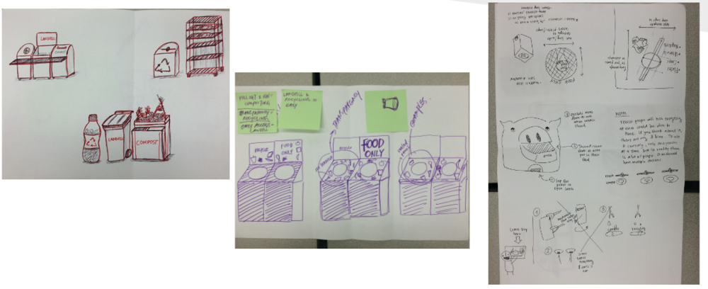
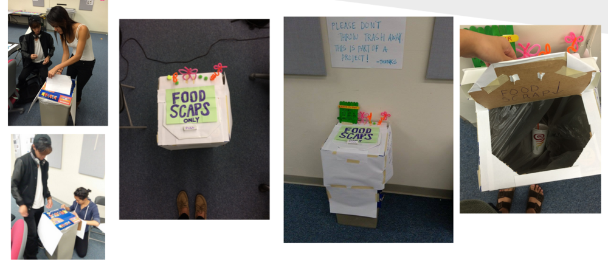
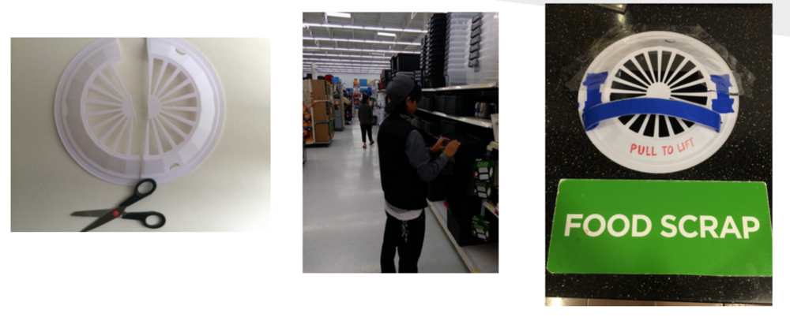

UCSD is one of the top public universities in the US, and is a leader in fields such as medical, science, and engineering.
We are a team of students part of a special studies Cognitive Science course called Redesign UCSD, and we are working on a quarter long project surrounding food waste. Our mission is to design a solution that will increase student environmental awareness, improve the trash trilogy system, and discover ways to recover errors of improper sorting of trash. With the help of HDH (Housing, Dining, and Hospitality) Econauts, we have conducted user interviews, sketched prototypes and tested different designs.
The first step we did was created an online survey to determine student’s knowledge on composting. Many students were unaware that our compost landfill (Miramar Landfill) takes 0% contamination. They were pleasantly surprised to find that all of the plates/utensils at the dining halls are recyclable and that all food scraps can be composted at UCSD.
We were working in a very unique problem space, in which the post consumer side were not properly composting at the dining halls. This affects the university, student body, and environment.
In addition to that, we conducted in person interviews, and collaborated with the Housing, Dining, and Hospitality Department on-campus. My favorite part was “deep hanging out” in which we would just simply make observations in everyday settings. This meant we had to sit and observe how students were sorting their trash.
Our findings suggested these pain points:
With this in mind, we had to design a solution under the constraint that we couldn’t drastically change the trash bins.
We had two main types of Personas: Pre-Consumer & Post-Consumer. Post consumers were also broken up into students who were lazy, environmentally conscious, didn’t care, or simply didn’t know.
We were also aware that HDH Econauts have already made plenty of past attempts to fix this issue through events with low turn outs and flyers that went largely ignored. We examined all of their past trash bin designs and started brainstorming.
We started with Paper Prototypes. Our idea was to make composting easier and more fun to the students. Again, going back to our Personas we had to develop trash bins that were easy to understand and easy to use.
Before this project, I never realized how many different designs exist in the world for Recycling. It was during the Competitive Analysis, that we researched what people around the world has designed.
I was inspired by the Fun Theory. The Fun Theory states that something as simple as fun is the easiest way to change people’s behaviour for the better. Be it for yourself, for the environment, or for something entirely different, the only thing that matters is that it’s change for the better.
Even more so, I was inspired by their Bottle Bank Arcade Machine. You can watch the video below:

Next we had to put our collective design to the test. So with arts and crafts materials, we repurposed a trash can in the classroom. We decorated the trash can so that it looked like plants were growing on top, in hopes that it would make students pause to take a moment to reflect on their actions. We labeled the top and underside of the lid with “Food Scraps Only”. And we had another sign on the wall that asked students not to throw away trash in there, only compostable food.
We found a jamba juice cup in there later that week. Yes, there should be 0% contamination but we were quite impressed with the results. The new trash design did deter a lot of students. Now we just had to figure out what more we could do…

We came to the conclusion that we should make it harder for students to throw whatever into the Compost bin. But those who knew/cared would still be able to compost correctly. We decided to put a lid on top of the compost bin. That created an extra step for students so it was easier to throw their trash in the other bins. The results were very promising.
We discovered that the new design worked but only to an extent. The compost bin only had compostable food when the other two bins were not full. If the other two bins were full, then students had no other choice than to put their trash in the compost bin. This certainly raised a problem that we didn’t account for. Ultimately, if the busser is not always taking out the trash then we create a situation in which students have no other choice than to put trash in the compost bin.
Lastly, our design didn’t account for outdoor trash. There are so many more factors such as rodents, weather, and visibility. If we had more time, we would develop more prototypes and conduct more contextual interviews.

I gained experience designing physical prototypes. I stepped out of my comfort zone from designing websites/apps and learned a lot about composting along the way. What our solution ended up being was that we put a lid over the compost bin. There are generally 3 bins at the dining hall, with the other 2 being recycling and landfill. We made it harder to people (who don’t care or know about composting) to throw whatever into the composting bin. But for people who did compost properly, they were still able to compost. We wanted to save the 90% rather than eliminate the 10%. San Diego’s Miramar Landfill only accepts 0% contaminated compost. So the issue at UCSD is that sometimes the compost bins are not purely compostable materials.